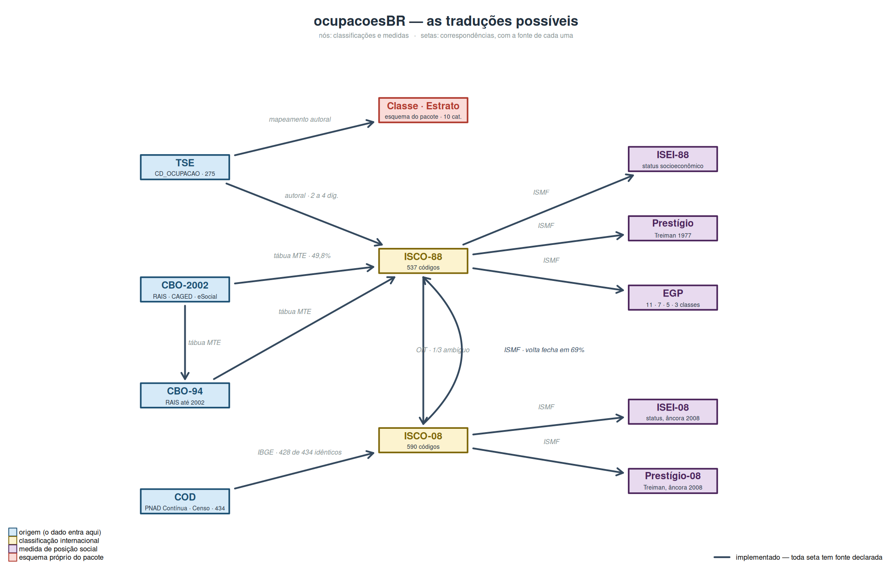

Pacote R · dado eleitoral brasileiro
Da ocupação declarada ao TSE à posição social
Traduz o código de ocupação das candidaturas em ISCO-88 e ISCO-08, e daí em ISEI, prestígio de Treiman, EGP e um esquema de classes desenhado para o dado eleitoral. Também entra pela CBO da RAIS e pela COD da PNAD.
remotes::install_github(“moraespeixoto/ocupacoesBR”)
R-CMD-checkpassing licençaMIT cadastro TSE1998–2026 idiomapt-BR
O uso normal
Uma linha, e o banco ganha uma coluna
Você passa a coluna inteira de códigos e recebe a coluna traduzida, alinhada linha a linha. Não há loop nem tradução código a código, e o banco não muda de tamanho.
Cada régua é uma função, e cada função é uma coluna nova. Como todas são vetorizadas puras, elas cabem no mesmo mutate(), em qualquer ordem, e o pipeline não sai do dplyr. O artigo Com o tidyverse percorre um pipeline inteiro assim.
O ano também é uma coluna, e é o que resolve a quebra de cadastro de 2002: em 1998 o código 214 era delegado de polícia; a partir de 2002 passou a ser escultor e pintor. Sem o ano, aquela linha receberia calada o escore de escultor. Com ele, o pacote devolve NA e avisa.
library(dplyr)
library(ocupacoesBR)
dados |>
mutate(
isco = tse_para_isco(CD_OCUPACAO, ano = ANO_ELEICAO),
isei = tse_para_isei(CD_OCUPACAO, ano = ANO_ELEICAO),
prest = tse_para_prestigio(CD_OCUPACAO, ano = ANO_ELEICAO),
egp = tse_para_egp(CD_OCUPACAO, ano = ANO_ELEICAO,
avisar = FALSE),
classe = tse_para_classe(CD_OCUPACAO, ano = ANO_ELEICAO)
) |>
select(-DS_CARGO) |>
glimpse()
#> Warning: There were 5 warnings in `mutate()`.
#> The first warning was:
#> ℹ In argument: `isco = tse_para_isco(CD_OCUPACAO, ano =
#> ANO_ELEICAO)`.
#> Caused by warning:
#> ! 1 candidatura(s) usam código(s) que o TSE REUTILIZOU depois (214): naquele ano designavam outra ocupação, e voltam NA.
#> Veja ?tse_vigencia.
#> ℹ Run `dplyr::last_dplyr_warnings()` to see the 4 remaining
#> warnings.
#> Rows: 5
#> Columns: 7
#> $ ANO_ELEICAO <int> 2026, 2026, 2026, 2026, 1998
#> $ CD_OCUPACAO <chr> "131", "601", "298", "999", "214"
#> $ isco <chr> "2421", "6100", NA, NA, NA
#> $ isei <dbl> 85, 23, NA, NA, NA
#> $ prest <dbl> 73, 38, NA, NA, NA
#> $ egp <chr> "I: dirigentes e profissionais superiore…
#> $ classe <chr> "Profissionais de nível superior", "Trab…Quatro portas de entrada
Cada fonte brasileira tem a sua porta, e todas levam ao mesmo lugar
TSE
O código de ocupação das candidaturas, de 1998 a 2026. A única ponte autoral do pacote, com régua de qualidade em cada linha.
tse_para_*()
CBO
A Classificação Brasileira de Ocupações da RAIS, do CAGED e do eSocial, pela tábua oficial do Ministério do Trabalho. CBO-2002 e CBO-94.
cbo2002_para_*()
COD
A classificação da PNAD Contínua e do Censo, construída sobre a ISCO-08. É por aqui que se compara candidatura com população.
cod_para_*()
ISCO
Para quem já tem o código internacional e quer só a medida, ou precisa atravessar da ISCO-88 para a ISCO-08 e voltar.
isco88_para_*()
Quatro réguas, que não são intercambiáveis
O pacote entrega todas com a mesma facilidade. Escolher é com você.
ISEI
Índice socioeconômico de Ganzeboom. Contínuo, somável, o que a literatura internacional usa como padrão.
Prestígio
Escala de prestígio ocupacional comparativa. Mede reputação, não recurso; as duas se separam em ocupações inteiras.
EGP
Erikson-Goldthorpe-Portocarero, portado das sintaxes originais. Exige posição na ocupação, que o TSE não pergunta: o pacote avisa.
Classe e estrato
Desenhado para o que o cadastro do TSE de fato registra, inclusive o político profissional e o vínculo público não especificado.
Por onde começar
Seis artigos, e o primeiro importa mais que a documentação de qualquer função
Da ocupação declarada à posição social
O percurso inteiro em uma sessão, com códigos reais do TSE, e a tabela que mostra onde cada medida responde e onde ela se abstém.
No pipeCom o tidyverse
O percurso inteiro dentro de um mutate(): uma coluna por régua, across(), a junção com o dicionário e a checagem de cobertura antes de analisar.
Escolher a medidaQual régua responde à sua pergunta
Quatro medidas, nenhuma intercambiável, e os sete erros que as pessoas cometem, na ordem em que os cometem.
ValidarA medida se sustenta?
Patrimônio declarado e escolaridade como critério externo, que não entram na construção da medida.
PercursosUm roteiro para cada fonte de dado
Candidaturas, RAIS, PNAD: o que chamar, em que ordem, e o que verificar antes de analisar.
A eleição em cursoA safra de 2026, na régua
Nenhum código novo: os 210 códigos declarados em 2026 são subconjunto dos 275 que o pacote já cobria.
O mapa das traduções
Cada seta tem fonte declarada
As tábuas de conversão derivam das sintaxes publicadas do International Stratification and Mobility File, de Ganzeboom e Treiman, e da tábua oficial do Ministério do Trabalho. São geradas por script a partir dos arquivos originais, nunca transcritas à mão.
A do TSE para a ISCO-88 é a única autoral. É por isso que ela carrega os rótulos e a régua de qualidade: é a parte que ninguém pode conferir contra um documento oficial.

Publicações
O que foi construído com o pacote
O artigo de método é o lugar onde as escolhas são justificadas, e não apenas descritas. Os trabalhos empíricos usam o pacote como instrumento de medida.
Peixoto, V. (2026). Da ocupação declarada à posição social: as decisões de medida do pacote ocupacoesBR.
[TÍTULO DO ARTIGO SOBRE CLASSE E RECRUTAMENTO POLÍTICO]
Ganzeboom, H. B. G. e Treiman, D. J. (1996). Internationally comparable measures of occupational status for the 1988 ISCO. Social Science Research, 25(3), 201–239.
Ao usar o ocupacoesBR, cite o pacote e a fonte das escalas
O pacote é o veículo, não a fonte. As réguas vêm do International Stratification and Mobility File, que Ganzeboom e Treiman mantêm há três décadas e pedem citação expressa.
Peixoto V (2026). _ocupacoesBR: Traduz a Ocupacao
Declarada ao TSE em Classificacoes Padronizadas_. R
package version 0.4.1,
<https://github.com/moraespeixoto/ocupacoesBR>.Autor Vitor Peixoto UENF Licença MIT